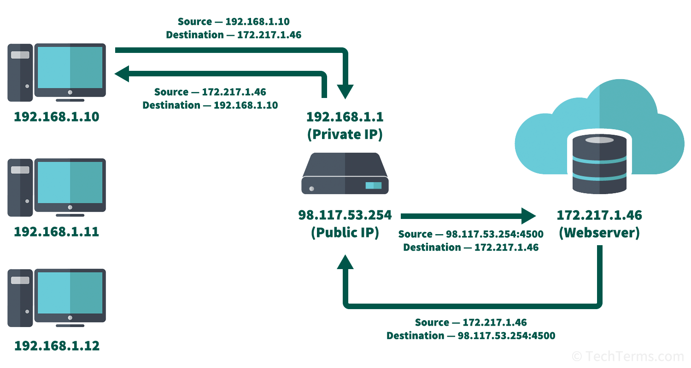
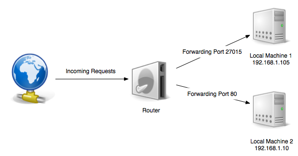

NAT
1. Pénurie d’adresses IPv4
Le nombre d’adresses IPv4 est 2564, soit 4,3 milliards d’adresses IPv4. C’est très insuffisant pour équiper tous les appareils connectés. IPv6 a été créé pour faire face à la pénurie, mais sa mise en oeuvre est lente. Le NAT est un moyen pour IPv4 de faire face au problème, en attendant l’avènement d’IPv6 qui résoudra la pénurie.
2. Classe d’adresses IP
Une adresse IP représente à la fois un réseau et un équipement sur ce réseau. Et de fait, l’adresse IP est composée d’une adresse réseau et d’une adresse d’équipement (dans cet ordre).
La frontière adresse_réseau/adresse_équipement est mobile. Elle est déterminée avec une donnée supplémentaire représentant le nombre de bits de l’adresse réseau. Exemples :
11.1.2.3/8-
Le
/8signifie que l’adresse réseau est codée par les 8 premiers bits. Donc cette adresse IP identifie l’équipement1.2.3sur le réseau11(IP de classe A). 173.19.1.2/16-
Le
/16signifie que l’adresse réseau est codée par les 16 premiers bits. Donc cette adresse IP identifie l’équipement1.2sur le réseau173.19(IP de classe B). 193.19.45.1/24-
Le
/24signifie que l’adresse réseau est codée par les 24 premiers bits. Donc cette adresse IP identifie l’équipement1sur le réseau193.19.45(IP de classe C).
3. Réseaux IP privés
Certains réseaux, par convention, ne sont pas routés sur Internet. Ces réseaux (appellés réseaux privés) sont :
-
le réseau
10.x.x.x/8comportant 2563 IP, -
les 16 réseaux compris entre
172.16.x.x/16et172.31.x.x/16, de 256² IP chacun, et -
les 256 réseaux
192.168.x.x/24, de 256 IP chacun.
Tous les routeurs d’Internet écartent ces réseaux de leurs tables de routage. Par conséquent, ces réseaux sont injoignables, simplement parce qu’aucun routeur n’indique comment les atteindre.
N’importe qui peut donc utiliser ces réseaux pour un usage personnel, sans risque de conflit. Dans les faits, ces réseaux privés sont utilisés pour des LAN privés, dont les équipements n’ont pas besoin d’être accessibles sur Internet. Par exemple, le réseau d’un particulier chez lui est un réseau privé. Et de fait, les équipements numériques d’un particulier ne sont pas joignables depuis Internet (ce qui est très sécurisant pour lui).
Mais alors, comment un équipement d’un réseau privé peut-il communiquer avec un équipement sur Internet ? Comment l’équipement peut-il recevoir les réponses à ses réquêtes ? Réponse : grâce au NAT.
4. NAT
Le NAT (Network Address Translation) est une astuce qui permet à une adresse IP privée, avec la complicité de sa passerelle, de communiquer sur Internet.
Lorsqu’un équipement d’un réseau privé veut communiquer avec un ordinateur sur Internet :
-
L’équipement envoie un paquet sur son LAN. Comme tout paquet IP, celui-ci contient l’adresse IP de la source (nécessaire pour recevoir une réponse). Donc ici, l’adresse source est l’adresse IP privée de l’émetteur du paquet.
-
Comme la destination n’est pas sur le LAN, le paquet est récupéré par la passerelle.
-
La passerelle procède alors à un subterfuge : elle remplace, dans le paquet, l’adresse source par sa propre adresse, son adresse publique (elle mémorise aussi des informations qui seront utiles au retour du paquet). Le paquet a donc maintenant une addresse source publique, et c’est ainsi qu’il débarque sur Internet.
-
La destination reçoit le paquet, le traite et prépare la réponse. Ce nouveau paquet part en direction de l’adresse IP source contenue dans le paquet reçu (qui est devenue l’adresse de destination dans ce nouveau paquet). Le paquet part donc à destination de la passerelle du LAN de la source.
-
La passerelle reçoit la réponse, détermine, à l’aide des informations mémorisées à l’aller, l’équipement auquel elle doit être remise, et lui transmet.

Le NAT permet donc, vu d’Internet, d’avoir plusieurs équipements derrière une seule et même IP. C’est un moyen de faire face à la pénurie d’adresses IP.
Un réseau privé derrière un NAT est inaccessible directement depuis Internet, ce qui est un avantage énorme d’un point de vue sécurité.
5. Redirection de ports
La redirection de port (port forwarding) permet à un équipement situé sur un réseau privé d’être contacté par des équipements situés sur Internet. Cela permet par exemple d’avoir un serveur web chez soi, ouvert sur Internet. Cela permet aussi de pouvoir, depuis Internet, d’accéder à la camera de surveillance de sa maison, à son NAS, à son réfrigérateur, etc.
Le port forwarding se paramètre sur la passerelle. Il faut la configurer de telle sorte qu’elle redirige le trafic réseau arrivant sur un port donné vers un appareil spécifique sur le LAN (elle doit avant tout réaliser un NAT pour ce réseau).

- Installer un serveur web chez soi
-
-
installer un serveur web sur un ordinateur du réseau domestique, donc avec une IP privée, par exemple 192.168.1.10 (un serveur web standard qui écoute par exemple sur le port 8080)
-
configurer la passerelle (munie d’une IP publique, par exemple 11.1.1.2) de telle sorte qu’elle redirige ce qui lui arrive sur un port donné, par exemple 80, sur le port 8080 de 192.168.1.10.
-
tester en envoyant une requête depuis Internet sur http://11.1.1.2. Celle-ci doit arriver sur le port 8080 de 192.168.1.10.
-
|
En ouvrant à tout vent un réseau initialement fermé, le port forwarding a un impact majeur sur la sécurité du réseau local. L’équipement auparavant inaccessible, devient d’un coup visible par tout Internet. Désormais, il ne peut compter que sur ses propres défense pour assurer sa sécurité. Il doit donc appliquer les bonnes pratiques de sécurité : logiciels à jour, patches de sécurité appliqués, mots de passe solides, etc. Et une surveillance attentive de ce qui s’y passe doit être effectuée. A la moindre faille, l’équipement sera au mieux congestionné (le meilleur des cas), ou pire, infiltré ou corrompu. Puis (le loup étant dans la bergerie) cette machine infiltrée servira de rebond pour accéder et pirater les autres équipements du réseau local privé. 😱 |